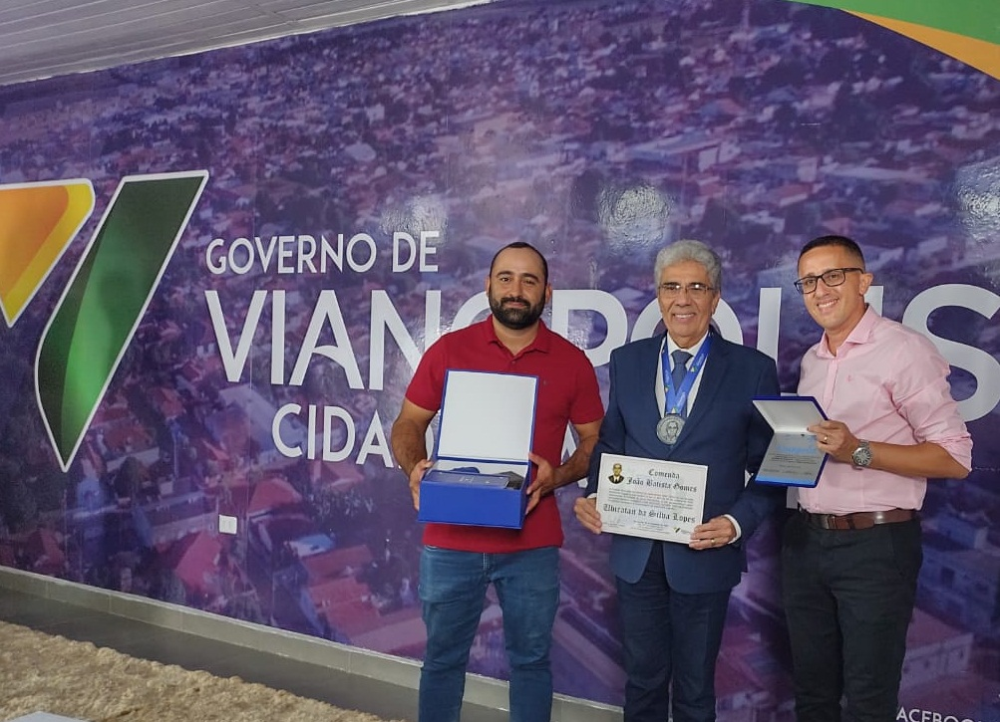
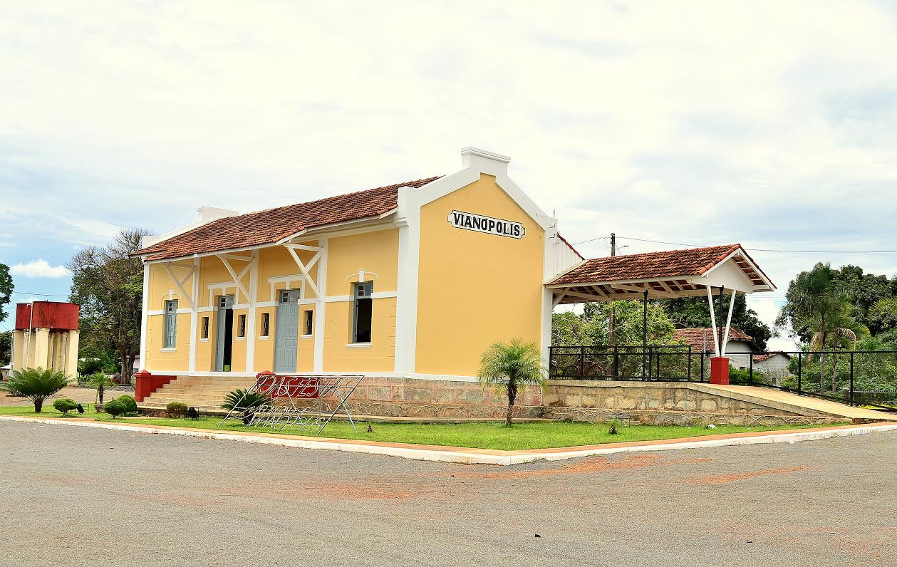
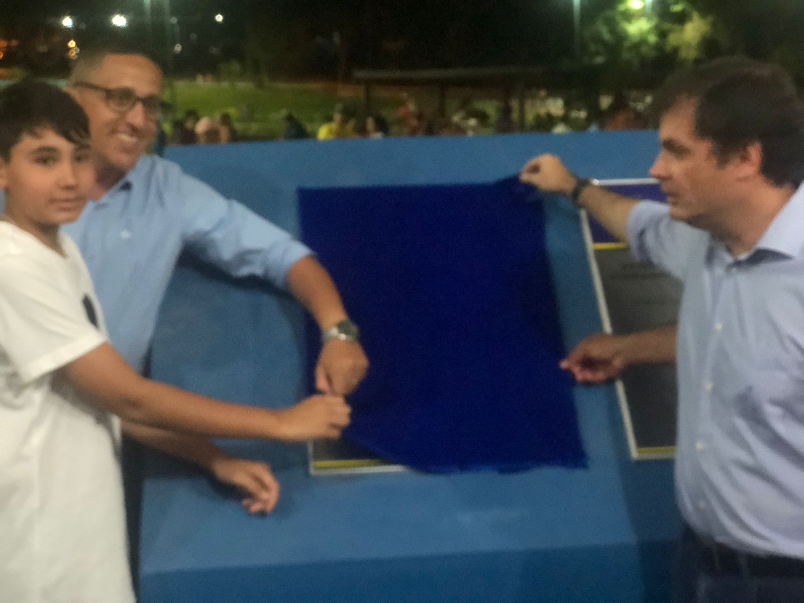

Fontes e créditos.
Os registros que deram origem aos textos deste projeto.
Sobre o conteúdo
Este site reúne textos elaborados para o site a partir de fontes públicas consultadas em 6 de novembro de 2026. A seleção destaca a trajetória e as iniciativas de Samuel Cotrim em Vianópolis. As notícias do acervo trazem a data do registro consultado; os textos não são reproduções integrais das matérias originais.
Informações de anúncios, solicitações, convênios e entregas são identificadas conforme o estágio descrito pela fonte. A pesquisa é um recorte de registros públicos encontrados, e pode receber novas informações e correções.
Referências consultadas
- Agência Sebrae de Notícias · 21/12/2022 ↗
- Correspondente Vianopolino · 19/05/2023 ↗
- O Vianópolis · 22/02/2024 ↗
- Prefeitura de Vianópolis · 22/12/2022 ↗
- Prefeitura de Vianópolis · 26/11/2021 ↗
- Prefeitura de Vianópolis · 23/08/2021 ↗
- Portal da Alego · notícia do gabinete de Issy Quinan · 12/05/2023 ↗
- Goinfra · Convênio 53 · processo 202300036011485 ↗
- Agência Assembleia de Notícias · 04/09/2023 ↗
- Prefeitura de Vianópolis · 25/02/2021 ↗
- Prefeitura de Vianópolis · 12/02/2021 ↗
- UOL Eleições · 15/11/2020 ↗
- Prefeitura de Vianópolis · Galeria dos Ex-Prefeitos ↗
- Correspondente Vianopolino · 07/05/2022 ↗
- Correspondente Vianopolino · 20/10/2026 ↗
- Correspondente Vianopolino · 28/02/2026 ↗
- SAPL · Câmara de São Miguel do Passa Quatro · 09/03/2026 ↗
- Perfil biográfico · Correspondente Vianopolino · 16/08/2020 ↗
AMO Soluções Municipais
- Cadastro empresarial e quadro societário · Atlas Público ↗
- Perfil empresarial · EMIS ↗
- Apresentação da AMO · Câmara de São Miguel do Passa Quatro · 09/03/2026 ↗
- PNCP · Santa Cruz de Goiás · processo 2660/2026 · objeto da compra ↗
- PNCP · resultado homologado do item 1 · CNPJ 58.810.559/0001-67 ↗
Fotografias e identidade
As duas versões da marca foram fornecidas para este projeto. As fotografias de fontes públicas são acompanhadas por créditos. Os créditos indicam a procedência; sua inclusão não transfere direitos de reprodução. As demais fotos do acervo têm a origem indicada nas próprias matérias.
Página de origem ↗

Página de origem ↗

Página de origem ↗

Página de origem ↗
Tipografia
Manrope, de Mikhail Sharanda e colaboradores, disponibilizada pelo Google Fonts sob a SIL Open Font License 1.1 ↗. Os arquivos de fonte são carregados da pasta local.
Funcionamento local
O site não inclui estatísticas de visitas, pixels de publicidade, formulários externos ou carregamento remoto de fotos e fontes. Os links de referência abrem os sites de origem quando acionados.
Currículo e acervo fornecido
- Currículo de Samuel Cotrim (2026), p. 1–2 · formação, experiência profissional, competências e prêmios.
- Histórico profissional, p. 1–14 · educação, esporte, saúde e lazer comunitário.
- Histórico como vereador, p. 1–12 · legislação, presidência, programas e acervo fotográfico.
- Histórico como secretário, p. 1–8 · empreendedorismo, trabalho, planejamento, trânsito e atividades municipais.
- Manual Oficial da AMO Soluções Municipais, parte I, p. 1–8 · marca, diagramas, eixos, valores e serviços.
- Retratos de Samuel e fotos históricas · material fornecido para compor o site.